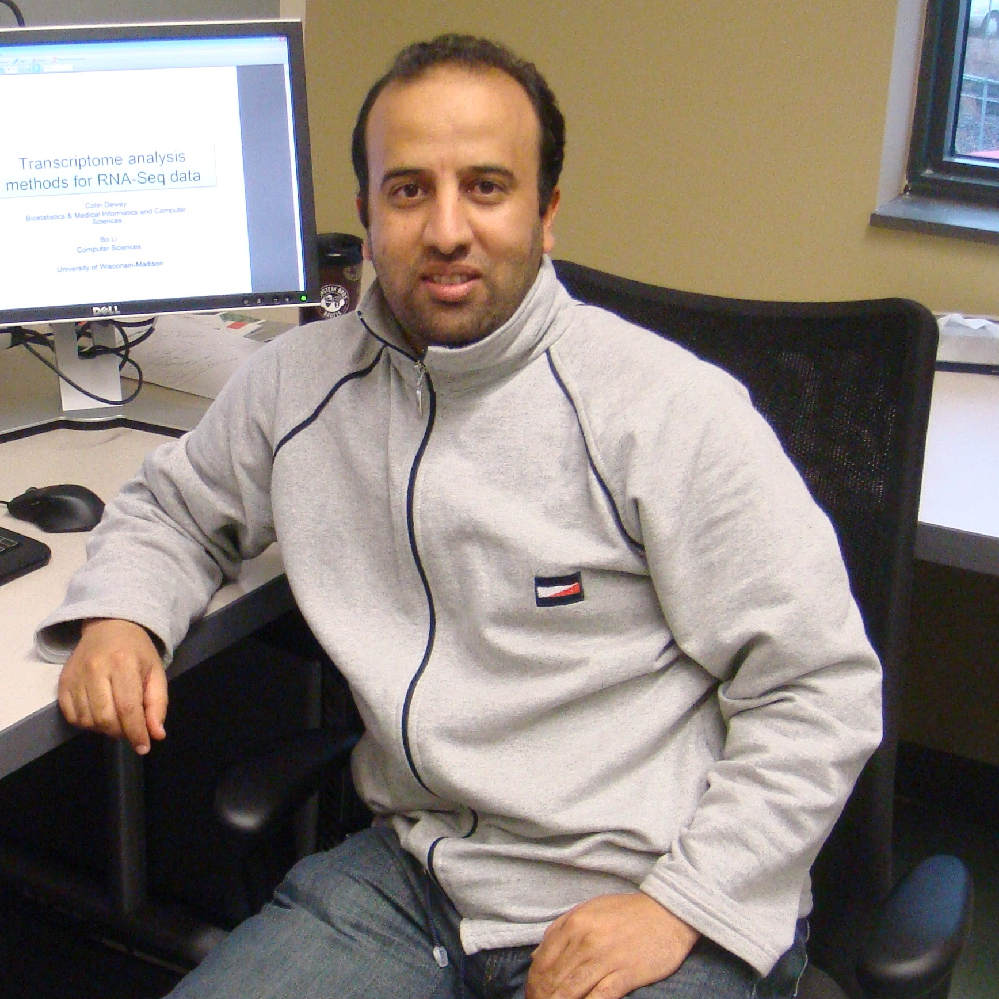

|  |
|
Bioinformatics and Biomedical Computing Laboratory
Speed School of Engineering, University of Louisville
Department of Computer Engineering and Computer Science
Duthie Center Room 238
222 Eastern Parkway, Louisville, KY 40292
Tel.: (502) 852-0467
Email: abdallah.eteleeb@louisville.edu
|
About Me
I am a Ph.D. candidate in the Bioinformatics and Biomedical research Lab at the Computer Engineering and Computer Science Department, University of Louisville. I received my B.Sc. degree in Computer Science from the University of Al-Jabel Al-Gharbi,
Libya and my M.Sc. degree in Information Systems Development from HAN University of Applied Science, The Netherlands. I joined the
Bioinformatics lab in the Fall of 2010 working under the supervision of Dr. Eric Rouchka.
My Ph.D. research is on the development of computational methods and algorithms for RNA-Seq analysis. Our aim is to develop methods and tools that can accurately detect differentially expressed genes and detrmine alternative splicing variants across biological conditions.
Prior to joining the University of Louisville, I worked as a lecture in the Computer Science department at the University of Al-Jabel Al-Gharbi, Zentan, Libya. I taught several computer science courses for undergraduate students including Web Programming, File Processing, Artificial Intelligence, Data Warehousing, and Visual Basic.
My areas of interest are Next-generation sequencing, RNA-Seq analysis,
ChIP-Seq analysis, High-throughput data analysis, transcriptomics, Machine learninig and data mining.
I mainly focus on the development of algorithms and methods to analyze high-throughput next-generation sequencing data, especially
RNA-Seq and ChIP-Seq. Other than analyzing NGS data, I am interested in machine learning techniques and data mining.
Publications
-
Elena Matveeva, John Maiorano, Qingyang Zhang, Abdallah Eteleeb, Paolo Convertini, Stefan Stamm, Eric Rouchka, Jiping Wang and Yvonne N Fondufe-Mittendorf. “ PARP-1 regulates alternative splicing. “ Genome Biology journal. (Under revision).
-
A. Eteleeb, H. Moseley, and E. Rouchka. “A Comparison of Combined P-value Methods for Gene Differential Expression Using RNA-Seq Data. ” The 5th ACM Conference on Bioinformatics, Computational Biology, and Health Informatics (ACM BCB'14), September 20-23, 2014, Newport Beach, CA (Accepted).
-
Eteleeb AM, Rouchka EC. “Differential expression analysis methods for ribonucleic acid-sequencing data.” OA Bioinformatics, 2013 Sep 01;1(1):3.
- A. Eteleeb, R. Flight, B. Harrison, J. Petruska, and E. Rouchka. An Island-Based Approach for Differential Expression Analysis and Alternative Splicing Detection. In Proceedings of the International Conference on Bioinformatics, Computational Biology and Biomedical Informatics (BCB), p. 419. ACM, 2013.
- Flight RM, Eteleeb AM, Rouchka EC. “Affymetrix® Mismatch(MM) Probes: Useful After All.” Proceedings of the 2012 ASE/IEEE International Conference on BioMedical Computing (BioMedCom 2012), pp. 561-568. December 14-16, 2012, Washington, D.C. (DOI 10.1109/SocialInformatics.2012.36)
-
Harrison BJ, Flight RM, Eteleeb A , Rouchka EC, Petruska JC. ''RNA Seq profiling of UTR expression during neuronal plasticity``. Proceedings of the Eleventh
Annual UT-ORNL-KBRIN Bioinformatics Summit. BMC Bioinformatics, 13(Suppl 12):A4, March 30-April 1, 2012, Louisville, KY.
-
Rajadinakaran, G., Huifang, F., Eteleeb, A., Rouchka E., Smith, M.E. “Next Generation Sequencing identifies Regulation of Pathways in Zebrafish Auditory Hair Cell
Regeneration.” Kentucky Academy of Sciences, the 97th Annual Meeting, November 4-5, 2011, Murray, KY.
Projects
- RNA-Seq: Identification of axonal collateral sprouting-specific genes. KBRIN-funded NGS Project. PI: Dr. Jeffrey Petruska, University of Louisville.
-
RNA-Seq: Next Generation Sequencing to Reveal Growth Hormone Pathways in Zebrafish Auditory Hair Cell Regeneration. KBRIN-funded NGS Project. PI: Dr. Michael Smith, Western Kentucky University.
-
ChIP-Seq : Activity/stress increases acetylation of lysine 14 in histone H3 (H3K14ac) in olfactory sensory neurons. KBRIN-funded NGS Project. PI: Dr. Timothy McClintock, University of Kentucky.
Teaching
Summer 2013:
- CECS 660-50: Introduction to Bioinformatics, Graduate course, University of Louisville.
2005-2008:
- File Processing and Organization, undergraduate course, Al-Jabel Al-Gharbi.
- Web Programming, undergraduate course, Al-Jabel Al-Gharbi.
- Artificial Intelligence, undergraduate course, Al-Jabel Al-Gharbi.
- Selected Topics: Intorduction to Data warehousing and OLAP, undergraduate course, Al-Jabel Al-Gharbi.
Resume
To view my resume click here.
Last Update: 19 May 2013. Abdallah Eteleeb.